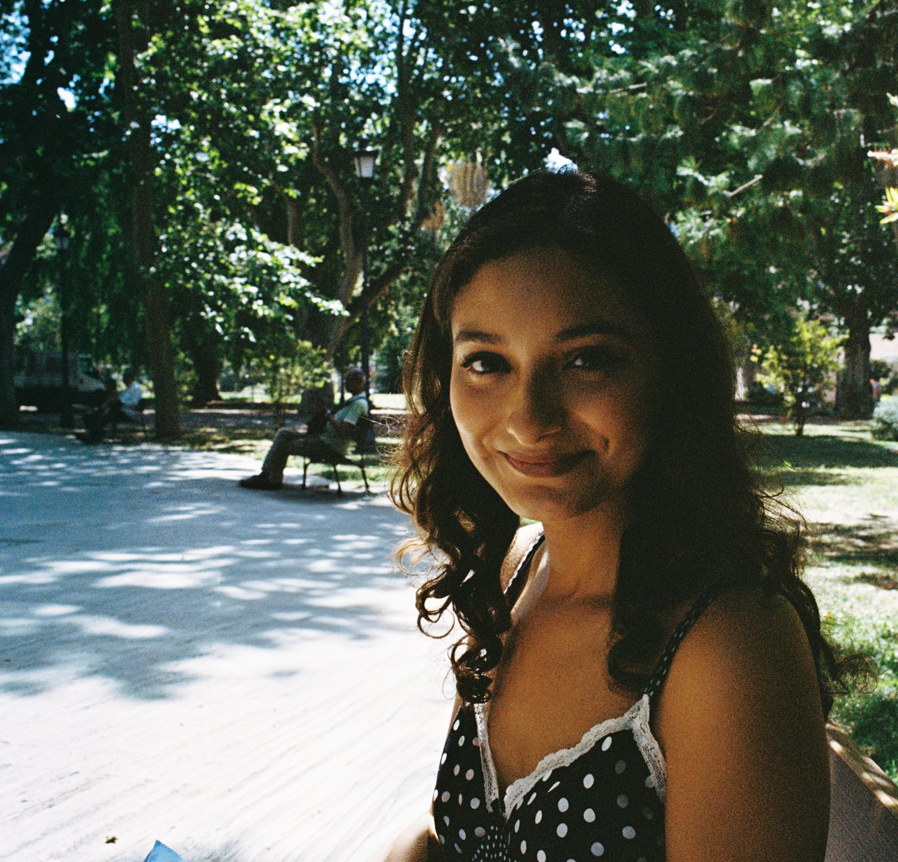
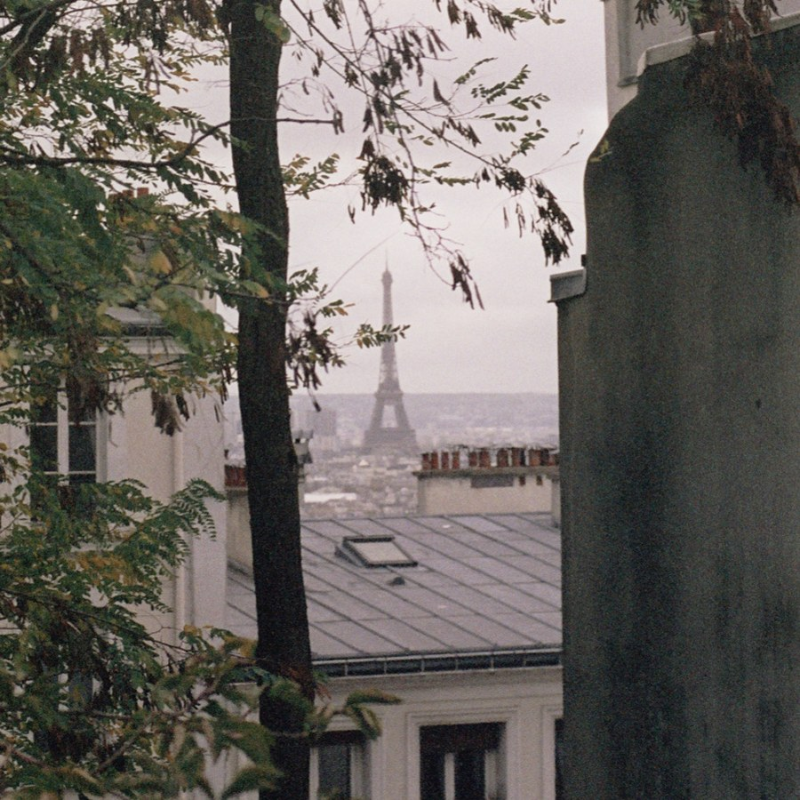
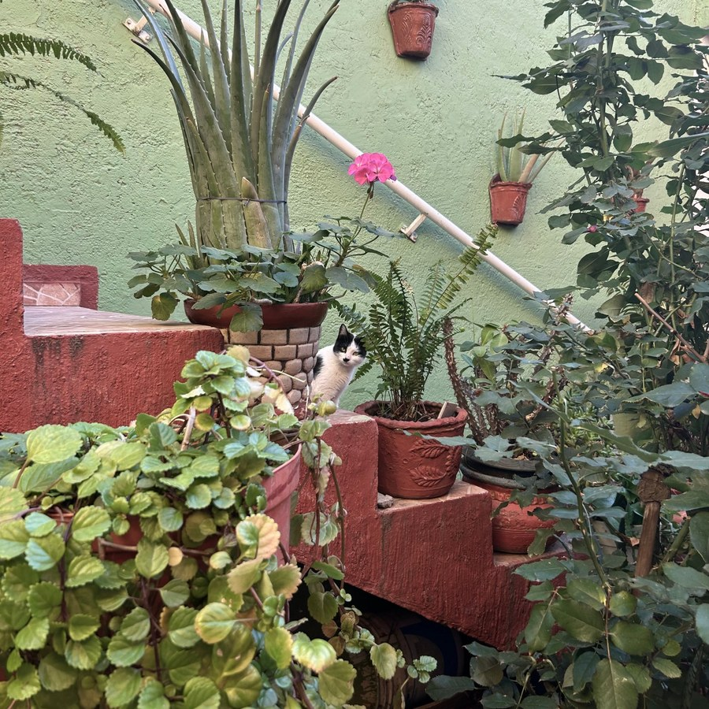
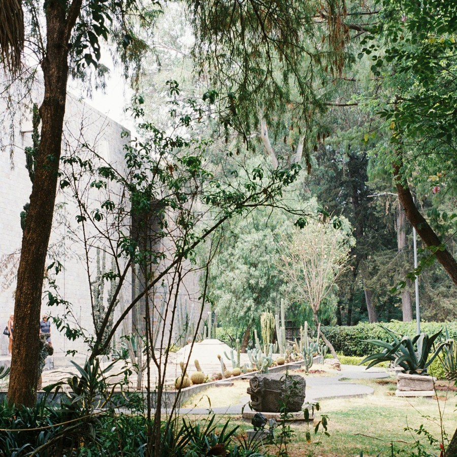
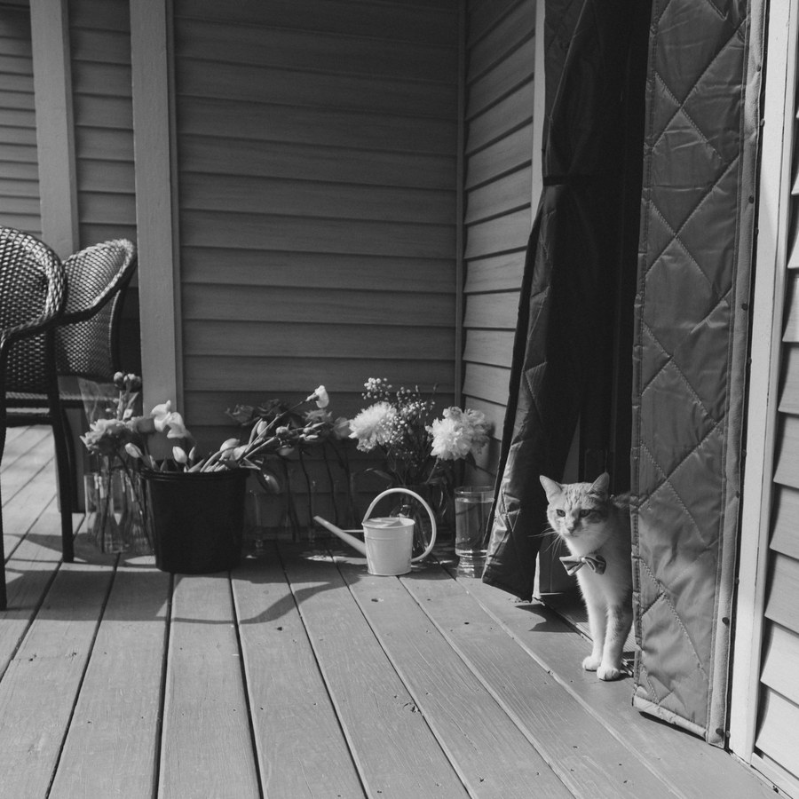

about
Hi there! I’m Kelly, a UX researcher based in Chicago. My roots are in anthropology and psychology, and last year, I returned to the University of Michigan to complete my M.S. in Information Science (UX Research and Design track). I am currently in my last year of graduate school.
The work I’ve done has spanned across a variety of industries, but across these experiences I’m drawn to research with lots of human tension, high complexity and high stakes, and deeply interconnected systems (must be the anthropologist in me!).
me, as a researcher
Three words I’d use to describe myself as a researcher: curious, multidisciplinary, and a storyteller.

curious
What brought me to research was a deep curiosity for people. I’m also curious about new technologies, consumer behaviors, and cultural trends shaping the present and future.
multidisciplinary
My multidisciplinary background in psychology, anthropology, public health research, and now HCI, allows me to draw from all sorts of tools to shape questions and creatively find answers.
storyteller→ impact
I enjoy the challenge that comes after the findings have been captured: telling the story that leads to smarter decisions.
Let’s work together!
Graduating in May 2027 and open to summer internships or full time roles. You can reach me at kortega@umich.edu or via LinkedIn.
me, as a human
Outside of work, I love to travel. When I do, I like to fully immerse myself in the culture, which means learning some of the language before I go and trying all the food, and I like to take photos with my 35mm film camera. I also love movies (and I mean it, I’m an AMC Stubs member!). But my main hobby, and what you’ll catch me doing all day, every day, is singing.
-

The Eiffel Tower, taken from Montmartre, 2022 -

Stray cat, Guanajuato, Mexico, 2023 (I’m thinking of starting a “cats from my travels” collection) -

El Museo de Antropología, Ciudad de México, 2024 -

Archie, my cat in his bow tie, 2025